Ways to handle asynchrony in JavaScript
If there is something that characterizes JavaScript, it is the asynchrony that some functions present. Specifically those that perform input / output operations such as writing or reading the disk or an AJAX request.
In JavaScript there are several ways to handle these processes in our developments.
Let's see what they are.
Callbacks
It is the first and the most common way to control asynchrony in JavaScript
In the following example we have a function that receives as parameters an input data: data, an array with array data and a callback: callback function.
The operation of the function is very simple, the array is added the data that comes by parameter and when it finishes, it calls the callback function that it receives per parameter, in that case the flame with the modified array.
I have added a small block to check if the array exists and if not to throw an error that we will pass to the callback.
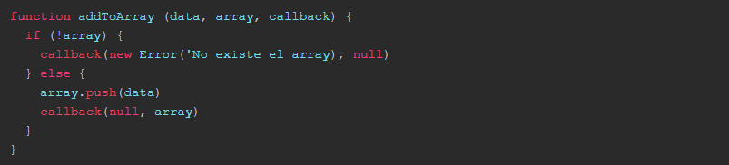In the following code we see how to call this function and treat the callback:
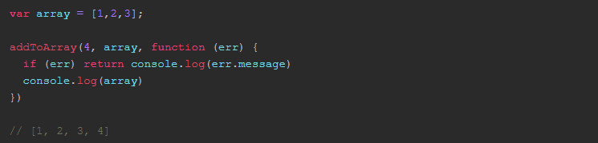What will he give back? When the addToArray function is finished, the callback will be executed and it will show us the array with the new data.
It seems silly because we could add the data to the array and then print it with console.log, but imagine that this operation of adding an item to the array was asynchronous, as it could be a call via AJAX.
To simulate this we are going to use the setTimeout function to add a delay of 1 second:
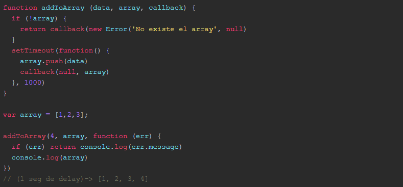If we did not have a callback function, and the addToArray function was:
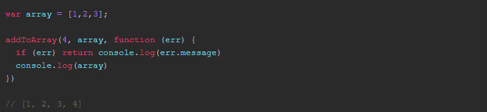What will he give back? When the addToArray function is finished, the callback will be executed and it will show us the array with the new data.
It seems silly because we could add the data to the array and then print it with console.log, but imagine that this operation of adding an item to the array was asynchronous, as it could be a call via AJAX.
To simulate this we are going to use the setTimeout function to add a delay of 1 second:
If we did not have a callback function, and the addToArray function was:
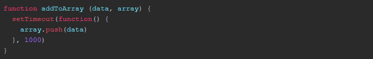And execute the function, we would return the following:
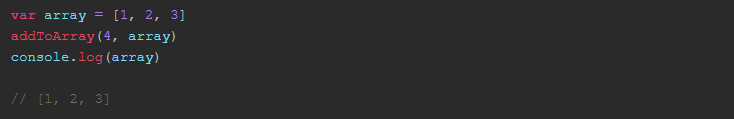When we print the array the new item has not yet been added, therefore the behavior that happens is not the one sought. This way the callbacks help us deal with this.
But if we have several functions like this ... the following can happen:
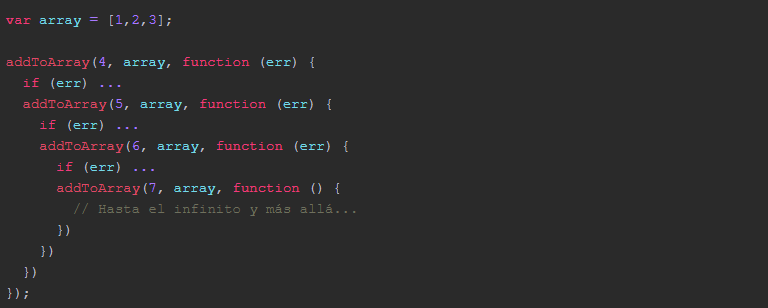The dreaded Callback Hell or Pyramid of Doom
Luckily this has been solved using libraries like async, or using promises with libraries like Q
Promises
Fortunately, in the new JavaScript specification (ES6 or ES2015) the Promises are already native and we do not need to require third-party libraries.
Let's see the same example as before but using native promises of ES2015
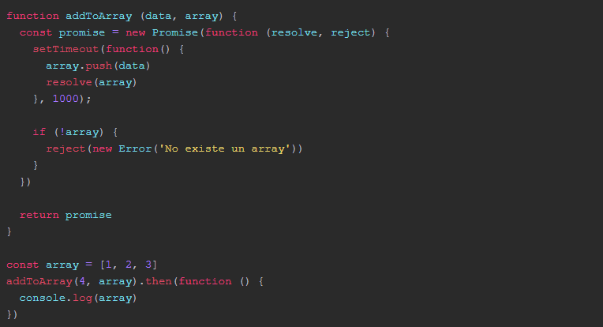Now the addToArray function creates a Promise object that receives as parameters a function with the functions resolve and reject.
Resolve we will call it when our execution finishes correctly.
In this way, we can write code more elegantly, and the previous Callback Hell can be solved like this:
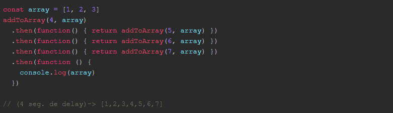This is known as nesting promises.
The way to deal with errors in a promise is through the catch function that collects what we send in the function reject within the Promise. And this function only has to be invoked once, we do not need to check each call if there is an error or not. Which greatly reduces the amount of code.
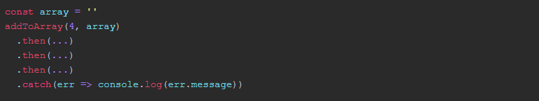Async/Await
The next step in the treatment of asynchronous processes is to use the async / await methods. This form is not available in the standard of ES6 or ES2015, but it is part of the next version ES7 or ES2016, but what we can use today with Babel and the preset of plugins stage-3.
The syntax for a function that uses async / await is as follows.
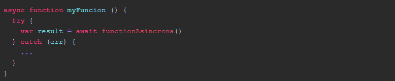The function will be preceded by the reserved word async and inside it we will have a try-catch block. Inside the try we will call the asynchronous function with the reserved word await in front, with this we make the function wait for it to be executed and the result of it is available in this case in the result variable.
If an error occurs during the execution, the catch block will be executed where we will deal with the error.
Combining async / await with a function based on promises, we can do the following with the example we were seeing:
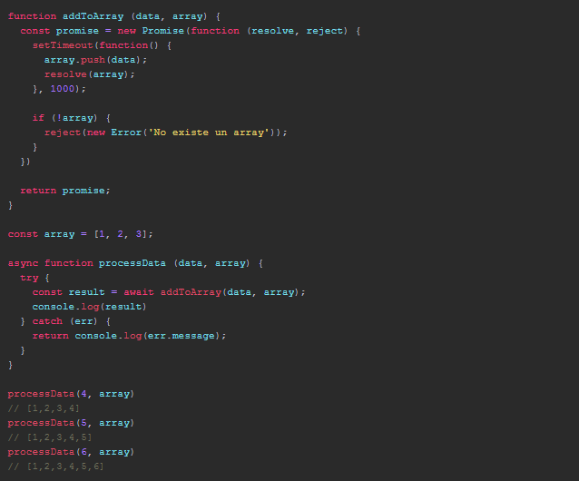In this way we are writing code sequentially but JavaScript is below executing asynchronous code.
This allows that, developers that are less familiar with JavaScript and its behavior, do not have so many entry barriers to start working with the language.